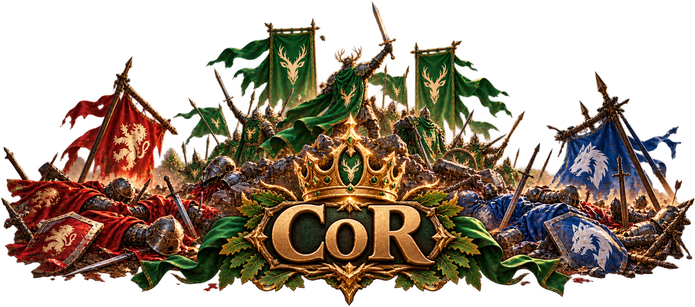
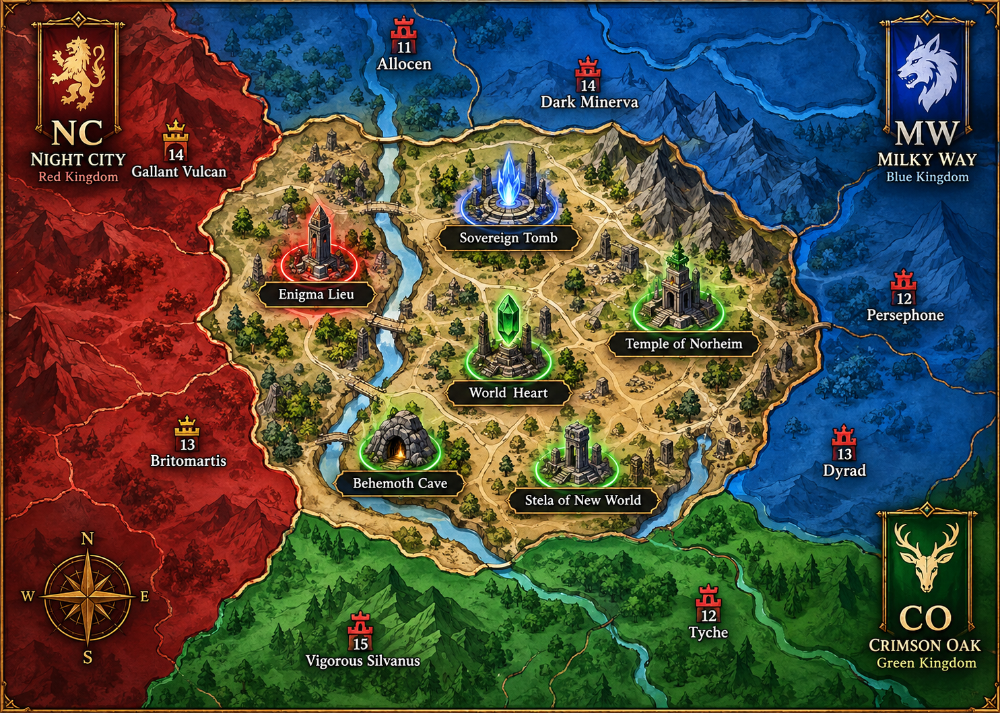

Contention of Relics
Server 538 uses a shared CoR agreement between CO, MW and NC. The purpose is to keep the competition organized, respect the King rotation and prevent unnecessary conflict between the three major alliances.
King Rotation
The King rotates between the three major alliances in a fixed order. The same agreement applies regardless of which alliance currently holds the rotation.
Relic Allocation
The colors on the map represent roles, not permanent ownership. The alliance whose turn it is in the King rotation takes the relics marked green. The other two major alliances each take one of the relics marked red and blue.
When the King rotates, the allocation rotates with it. Do not contest or remove another alliance from its allocated relic.

Current rotation alliance
One of the other alliances
One of the other alliances
Energy Nodes
Energy Nodes follow the same rotation principle. Higher-level nodes are reserved for the alliance whose turn it is, while lower-level nodes remain open to all three major alliances.
Respect the claim
Once CO, MW or NC has taken an open Level 1–3 node, it belongs to that alliance. Do not attack or remove each other from claimed nodes. When in doubt, ask before acting.